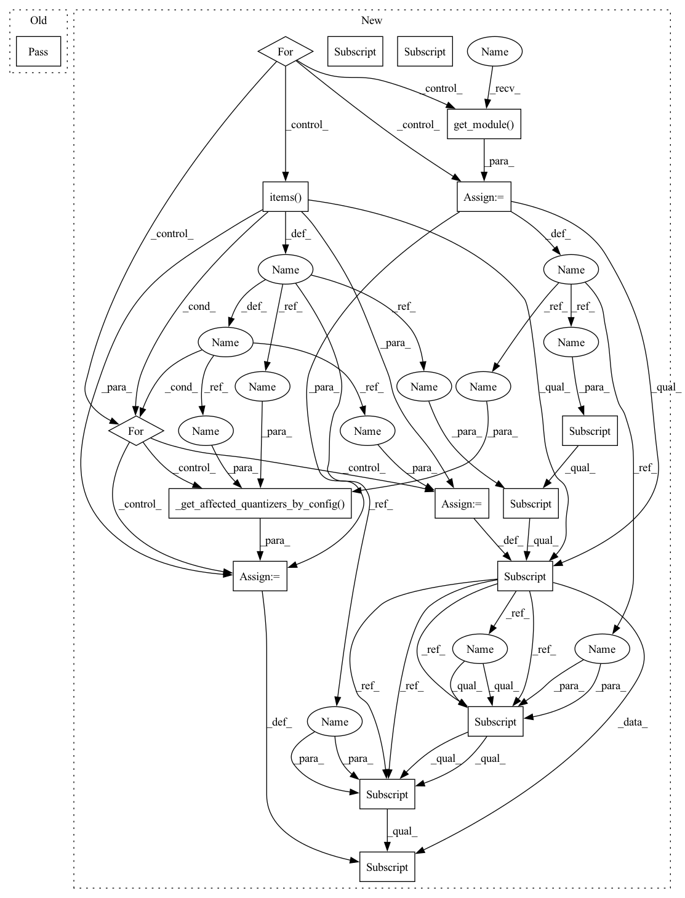

Pattern ID :8363

Before Change
pass
def _set_model_input_configs(self, model_input_configs: ConfigType):
pass
def _set_model_output_configs(self, model_output_configs: ConfigType):
pass
After Change
:param model_input_configs: Configuration for model inputs
input_ops = get_all_input_ops(self._connected_graph)
for op in input_ops:
layer = op.get_module()
for config_key, config_val in model_input_configs.items():
self._layer_to_config_dict[layer][config_key][SETTING] = config_val
self._layer_to_config_dict[layer][config_key][AFFECTED_QUANTIZERS] = \
self._get_affected_quantizers_by_config(layer, config_key, config_val)
def _set_model_output_configs(self, model_output_configs: ConfigType):
Set model output specific configurations (sixth level of specificity in configuration file)
In pattern: SUPERPATTERN
Frequency: 3
Non-data size: 17
Instances
Fragment ID: 29253142
Project Name: quic/aimet
Commit Name: 280af253d2a08a720733eaf2a838618e1425503a
Time: 2022-04-07
Author: quic_geunlee@quicinc.com
File Name: TrainingExtensions/tensorflow/src/python/aimet_tensorflow/keras/quantsim_config/quantsim_config.py
M Class Name: QuantSimConfigurator
N Class Name: QuantSimConfigurator
M Method Name: _set_model_input_configs(2)
N Method Name: _set_model_input_configs(2)
M Parent Class: AimetCommonQuantSimConfigurator
N Parent Class: AimetCommonQuantSimConfigurator
M File Name: TrainingExtensions/tensorflow/src/python/aimet_tensorflow/keras/quantsim_config/quantsim_config.py
N File Name: TrainingExtensions/tensorflow/src/python/aimet_tensorflow/keras/quantsim_config/quantsim_config.py
M Start Line: 328
M End Line: 328
N Start Line: 336
N End Line: 345
'>
Before Change
pass
def _set_op_type_configs(self, op_configs: OpTypeType):
pass
def _set_supergroup_configs(self, supergroups_configs: List[SupergroupType]):
pass
After Change
:param op_configs: Dictionary containing configurations for ops of certain types
for op in self._connected_graph.ordered_ops:
layer = op.get_module()
if op.type in op_configs:
for config_key, config_val in op_configs[op.type].items():
if config_key == ConfigDictKeys.PARAMS:
self._update_layer_param_config(layer, config_val)
else:
self._layer_to_config_dict[layer][config_key][SETTING] = config_val
self._layer_to_config_dict[layer][config_key][AFFECTED_QUANTIZERS] = \
self._get_affected_quantizers_by_config(layer, config_key, config_val)
def _update_layer_param_config(self, layer: layers.Layer, param_configs: ParamType):
Update param config of layer in config dictionary
'>
Fragment ID: 29253140
Project Name: quic/aimet
Commit Name: c39b22df5d8471f71cbbc2a55f110ab126c450ed
Time: 2022-04-04
Author: quic_geunlee@quicinc.com
File Name: TrainingExtensions/tensorflow/src/python/aimet_tensorflow/keras/quantsim_config/quantsim_config.py
M Class Name: QuantSimConfigurator
N Class Name: QuantSimConfigurator
M Method Name: _set_op_type_configs(2)
N Method Name: _set_op_type_configs(2)
M Parent Class: AimetCommonQuantSimConfigurator
N Parent Class: AimetCommonQuantSimConfigurator
M File Name: TrainingExtensions/tensorflow/src/python/aimet_tensorflow/keras/quantsim_config/quantsim_config.py
N File Name: TrainingExtensions/tensorflow/src/python/aimet_tensorflow/keras/quantsim_config/quantsim_config.py
M Start Line: 281
M End Line: 281
N Start Line: 301
N End Line: 313
'>
Before Change
pass
def _set_model_output_configs(self, model_output_configs: ConfigType):
pass
def _initialize_quantizers_by_layer(self, quant_scheme: Union[QuantScheme, str], rounding_mode: str,
default_output_bw: int, default_param_bw: int):
After Change
:param model_output_configs: Configuration for model outputs
output_ops = get_all_output_ops(self._connected_graph)
for op in output_ops:
layer = op.get_module()
for config_key, config_val in model_output_configs.items():
self._layer_to_config_dict[layer][config_key][SETTING] = config_val
self._layer_to_config_dict[layer][config_key][AFFECTED_QUANTIZERS] = \
self._get_affected_quantizers_by_config(layer, config_key, config_val)
def _initialize_quantizers_by_layer(self, quant_scheme: Union[QuantScheme, str], rounding_mode: str,
default_output_bw: int, default_param_bw: int):
'>
Fragment ID: 29253138
Project Name: quic/aimet
Commit Name: 280af253d2a08a720733eaf2a838618e1425503a
Time: 2022-04-07
Author: quic_geunlee@quicinc.com
File Name: TrainingExtensions/tensorflow/src/python/aimet_tensorflow/keras/quantsim_config/quantsim_config.py
M Class Name: QuantSimConfigurator
N Class Name: QuantSimConfigurator
M Method Name: _set_model_output_configs(2)
N Method Name: _set_model_output_configs(2)
M Parent Class: AimetCommonQuantSimConfigurator
N Parent Class: AimetCommonQuantSimConfigurator
M File Name: TrainingExtensions/tensorflow/src/python/aimet_tensorflow/keras/quantsim_config/quantsim_config.py
N File Name: TrainingExtensions/tensorflow/src/python/aimet_tensorflow/keras/quantsim_config/quantsim_config.py
M Start Line: 331
M End Line: 331
N Start Line: 350
N End Line: 359